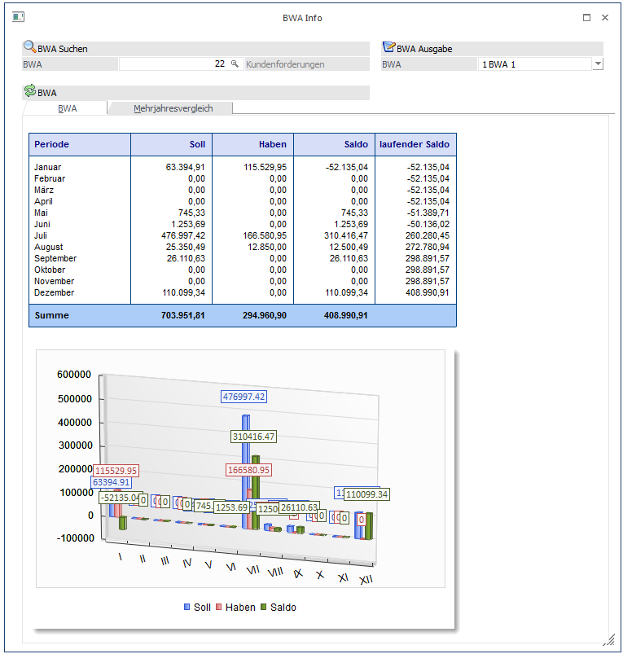
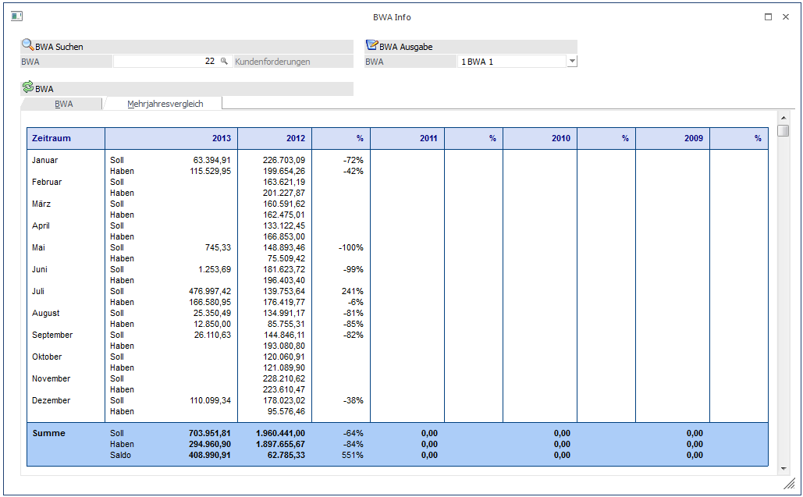

In diesem Fenster werden die Umsätze einer BWA sowohl in Zahlen als auch in einer Grafik dargestellt. Dabei werden die gebuchten Daten in den Perioden angedruckt, die lt. Buchungsdatum gültig sind. D.h. verläuft die Periode Januar vom 01. Januar bis 05. Februar, wird ein am 03. Februar gebuchter Wert in der Periode Januar angezeigt.
Die BWA wird aus dem Fenster BWA-Stamm übernommen und kann ggf. manuell geändert werden. Mit dem Matchcode (F9-Taste) kann nach allen bereits angelegten BWA"s gesucht werden.

Die Beschriftung der Perioden erfolgt lt. Periodendefinition im Mandantenstamm.
Durch Anwahl des Registers "Mehrjahresvergleich" können neben den laufenden Umsatzzahlen auch die Umsatzzahlen der letzten (max. 5) Jahre angezeigt werden.
Welche Werte hier angezeigt werden (Soll/Haben/Saldo/Budgets) ist abhängig von der Einstellung in den "Mehrjahresvergleich - Optionen"; ebenso worauf sich die Prozentsätze der einzelnen Werte beziehen (siehe dazu auch den Menüpunkt "Mehrjahresvergleich - Optionen" im WinLine START).

Ø Ausgabe für BWA1, BWA2 oder BWA3
Je nach Auswahl wird die Summe für die BWA gebildet. Also z.B. die Summe von jenen Konten, wo die ausgewählte BWA als BWA1 hinterlegt ist, usw.